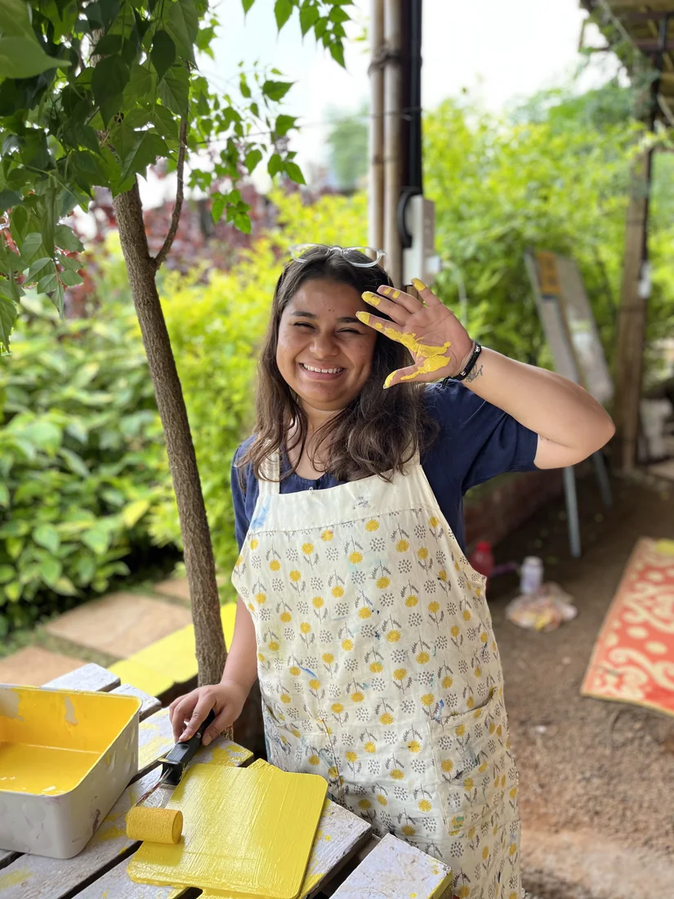

About
Hi, I’m Muskan.
I design digital products, and I care about who is on the other side of the screen.

I have been making things for as long as I can remember, and somewhere between filling sketchbooks as a child and building design systems for a living, that has not changed.
Five years in, I have moved from visual design into UI and now into product design, largely by staying curious about the next part of the problem. I design for web and mobile, across consumer products and enterprise tools.
I like clean, minimal interfaces where nothing sits on the screen unless it has earned its place. I like understanding who is on the other side and what they came to do. And when a brand calls for something more playful, I enjoy that just as much. The tone should suit the product, not me.
Design systems are where I am most at home. Components, variants, states and the logic underneath, the structure that keeps a product consistent long after I have handed it over.
The part I enjoy most is people. Talking to them, building alongside them, and working through the disagreements that usually make the work better.
Good systems are invisible. That is the point.
“Trust me, I can make things happen.”
The short version
Quick facts
- Experience
- 5+ years
- Role
- Product Designer, UI and UX
- What I do
- UI design, design systems, user flows, information architecture, prototyping
- Tools
- Figma, FigJam, Adobe Creative Cloud, SAP MDK, AI tools
- Based in
- Pune, India
Also true
Things that are also true about me
What I am growing into
The work that happens before the visual design begins. Research, strategy, user flows, information architecture. The more I understand about the problem, the better the interface gets, so that is where I am pushing myself next.
What I work with
My design toolkit
Off the clock
I like making things
Some days it’s a mandala. Some days it’s a little gift for someone. Sometimes it’s a camera, a badminton racket, or a completely unnecessary plan for a weekend away. I just like having something to make, somewhere to go, or something to look forward to.